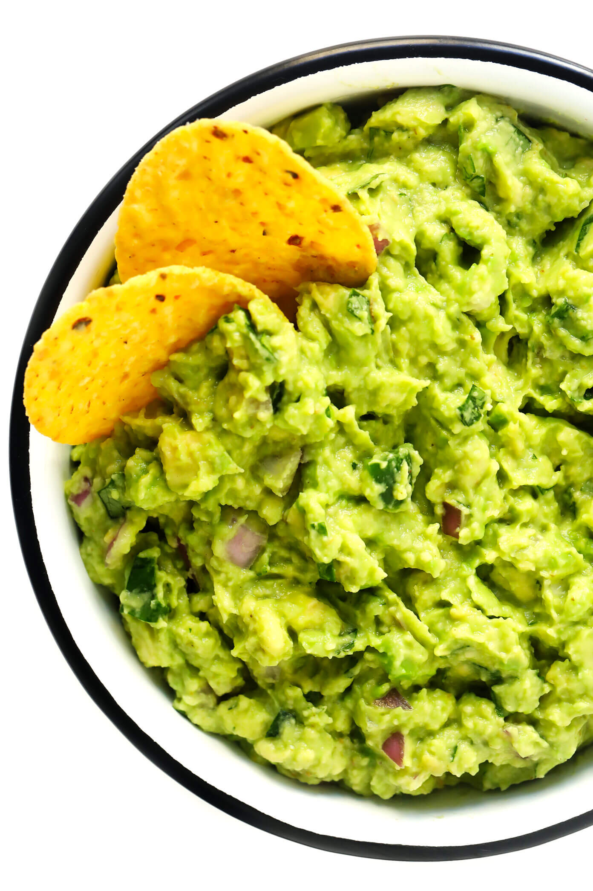

Guacamole

Description:
So we have the main course (enchiladas), the drink to wash it down
with, and now I present to you the appetizer! Guac! This is hands
down the best guacamole I have made with relatively simple Ingredients.
This is the final recipe for our fun dinner night!
Ingredients:
- 3 ripe avocados
- 1 jalapeno
- 1/2 cup finely diced red onion
- 1 tablespoon fresh lime juice
- 1/3 cup fresh cilantro leaves
- 1/2 tsp salt
- 1/4 tsp cumin
Steps:
- Mash the avocados in a mixing bowl
- Stir in the jalapeno, onion, lime, cilantro, salt, and cumin
- Taste and season with extra toppings if needed
- Serve and enjoy!